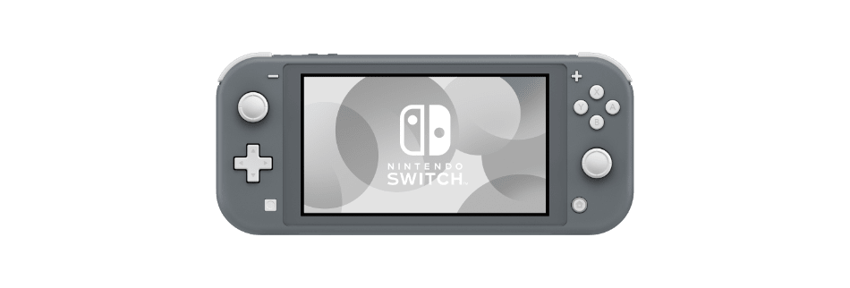

|
PROCESADOR CPU: Procesador NVIDIA Custom Tegra MEMORIA Y ALMACENAMIENTO: 32 GB de memoria interna espandible a 2TPantallaMultitáctil capacitiva de 6.2 pulgadas (15.75 cm) con una resolución de 1280 x 720.PUERTOS Y CONECTIVIDAD: Hasta 1080p a través de HDMI en el modo TV Hasta 720p en modo portátil y modo semiportátil a través de la pantalla integrada.Dimensiones Aproximadamente 16 cm de alto, 23.88 cm de ancho y 14 cm de largo Aproximadamente 10.16 cm de alto, 23.88 cm de ancho y Conexión inalámbrica wifi, Bluetooth 4.1 |
 |
GPU: Nvidia Tegra personalizadoMEMORIA:32 GB (ampliable vía microSD)Bateria 3.570 mAhPantalla 5,5 pulgadas, resolución 1280x720, panel LCDs: Nvidia Tegra personalizado
|